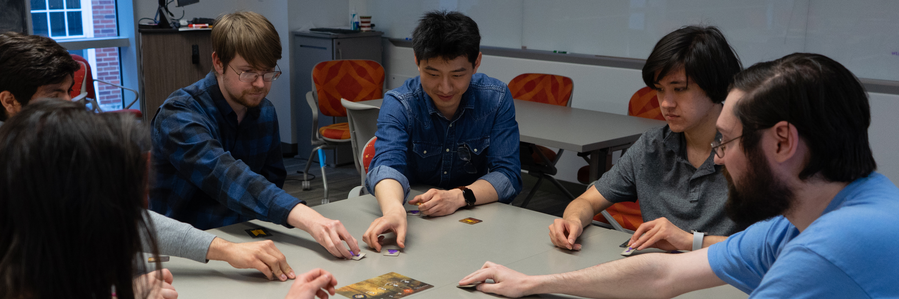
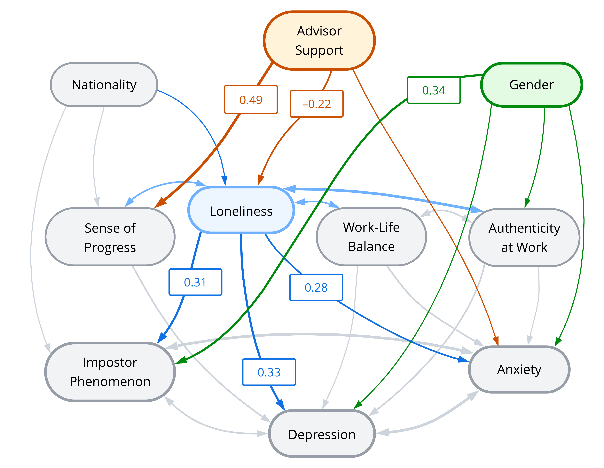
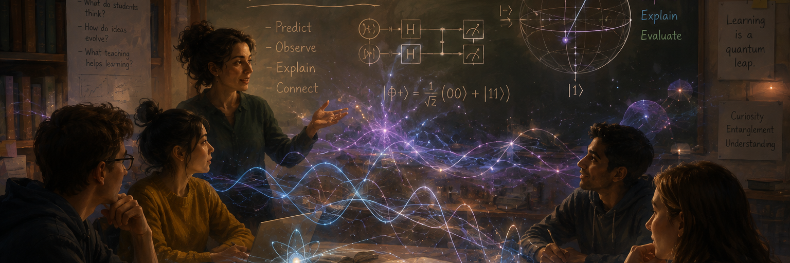

Physics Education Research

What Can We Do About Mental Health Struggles in Physics and Astronomy Grad School?
Grad school is a long period in a physics student's life that is replete with both opportunity and challenge. It is well-known that graduate students suffer from mental health challenges at much higher rates than the general population. In summer 2024, we conducted a survey study of eight physics and astronomy graduate programs across the US, and found a few things:

- Physics and astronomy graduate students in our sample reported anxiety and depression at 4-6 times the rates of the general population. About two thirds of our sample reported high levels of impostor phenomenon.
- Women and non-binary students reported worse mental health (on average, more symptoms of anxiety, depression, and impostor phenomenon) than male students.
- Among the variables we surveyed, loneliness was most strongly connected to mental health: students with a broad social support net reported fewer symptoms of mental health issues.
- Support from research advisors plays a critical role in student mental health in two specific ways: providing social support and helping students feel a sense of professional progress during their time in grad school.
These results should act as a catalyst for change in physics and astronomy graduate programs. In pushing for that change, I am interested in a few particular questions:
- Why is impostor phenomenon so prevalent among physics and astronomy graduate students?
- What are particular ways that research advisors mitigate students' loneliness and support their sense of professional progress?
- Can we design activities and interventions to help reduce these harmful aspects of physics/astronomy grad school cultures?
Publications
(link) P. R. Banner, K. O'Brien, and C. Turpen. "Building graduate programs that support mental well-being." Physics Today (May 2026). DOI: 10.1063/pt.7099d9fa5b.In this article in Physics Today, we describe the outcomes of a summer 2024 survey of grad students in eight physics and astronomy graduate programs. We show that our sample experienced mental health struggles at a high rate, and then we related these mental health struggles to aspects of the graduate student experience using structural equation modeling.

How Do Students Learn Quantum Mechanics?
Quantum mechanics is a fascinating subject. It suggests a view of the world that is at odds with our everyday experience; at the same time, the mathematical theory itself is one of the most well-tested theories humankind has ever produced. Because it is simultaneously so successful and so unintuitive, it is a fertile testing ground for fundamental theories of learning and a place for burgeoning physicists to practice their skills as a physicist. In teaching QM, I bring my own experience as an experimental quantum physicist. I am interested in questions like:
- How does seeing multiple two-state systems affect students' epistemological understanding of quantum systems?
- How can an instructor generate lab-like experiences in QM classes using computational tools?
- Can QM be used to increase students' physics identity and self-efficacy?
- How do fundamental theories of learning, such as resources theory, apply to QM?
I'll be starting investigations of these questions in Fall 2026—stay tuned.